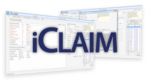

Focus on Patients, Not Paperwork
If you're excited by the prospect of a "no headache" billing service that still gives you full control of your patient records, we've got the solution you're looking for.
How our iClaim billing service benefits you:
- Get your claims paid fast – Because most of our claims are paid on first submission, you'll get the funds more quickly. Also, our billing service has one of the lowest rejection rates in the industry, so you'll have fewer unpaid claims.
- Real-time access – iClaim is web-based, so you have 24/7 access to your data from any computer with an internet connection. That means you can view the real-time status of every aspect of your billing cycle anytime, anywhere.
- Better reporting for better decisions – With iClaim, you can access hundreds of reports in real-time with the touch of a button. That gives you ultimate control, and the data you need to make the right decisions for your practice.

- Faster Reimbursement
- Lower Claims Rejections
- Denial Management
- 24/7 Web-Based Access
- HL7 / HIPAA Compliant
- Online Scheduler
- Real-Time Reporting